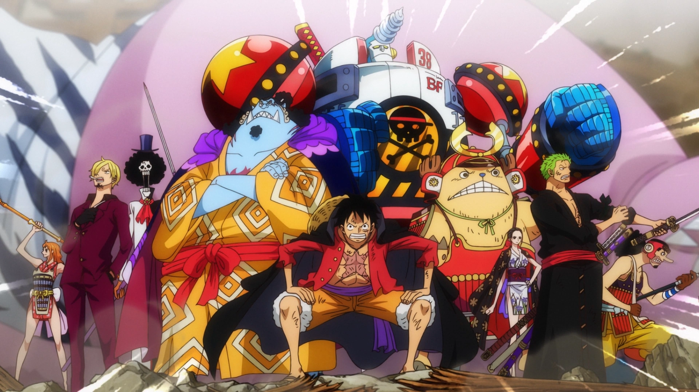

One Piece follows Monkey D. Luffy and his crew as they sail across the Grand Line in search of the ultimate treasure.
The Straw Hat Pirates are a group of unique individuals united by dreams, loyalty, and freedom. Each member plays a vital role in their journey across the seas. The Straw Hat Pirates are a famous pirate crew led by Monkey D. Luffy, known for their diverse members, unwavering loyalty, and consistent challenging of World Government authority.

One Piece is not just an anime, it is a story about dreams, friendship, sacrifice, and never giving up even when the whole world stands against you.